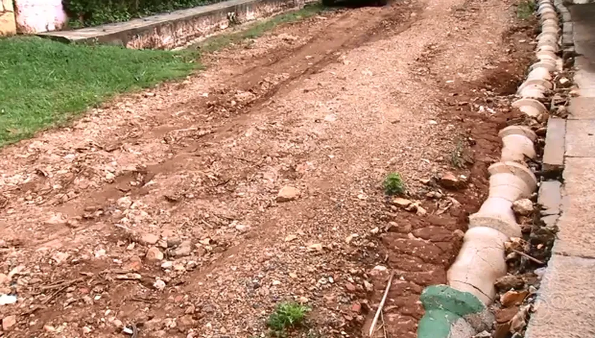
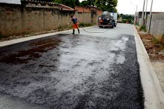

Registros da população
Moradores reclamam de ruas esburacadas em cidades da região de Sorocaba

Moradores reclamam de falta de água em Salto de Pirapora
Motoristas em Itu relatam congestionamentos constantes devido à falta de sincronização dos semáforos.
Feedback
- José Aparecido:
- "Finalmente pavimentaram a rua aqui do bairro. Segue anexo da rua pavimentada:"

- Joaquim Jorge:
- "Graças a essa plataforma a dengue aqui na rua foi combatida"
- Marcelo Nunes:
- "Poucos dias após as queixas, a prefeitura deu início às obras para a instalação da rede de encanamento de água. Agradecido!"